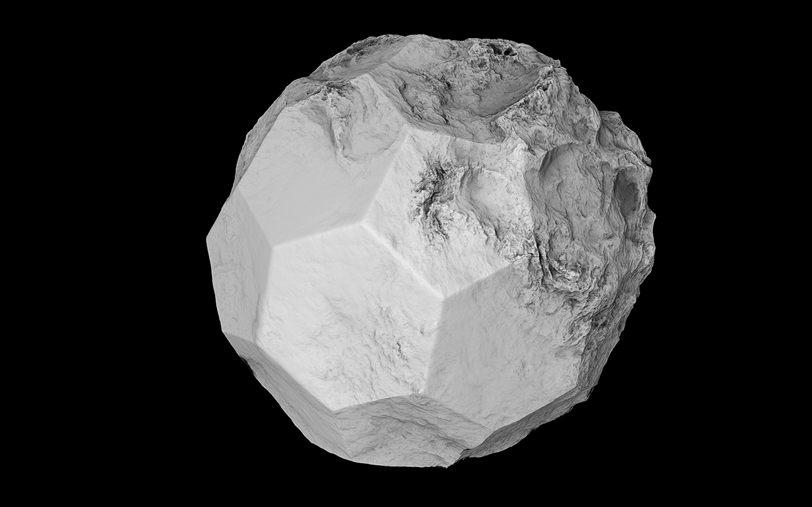
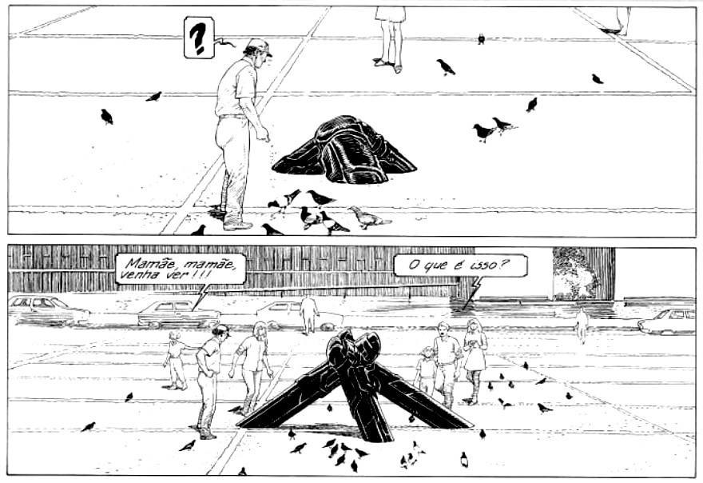
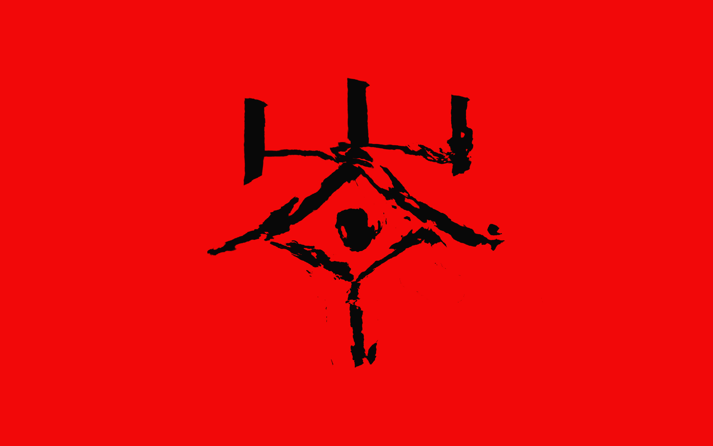
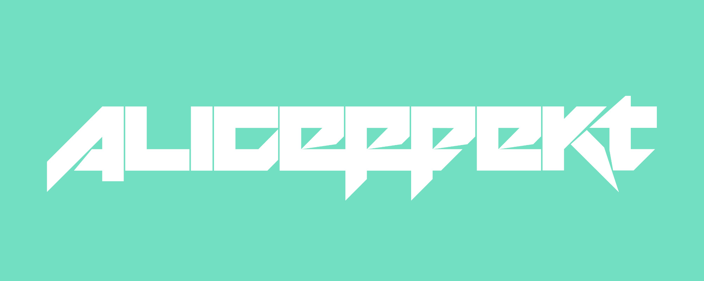
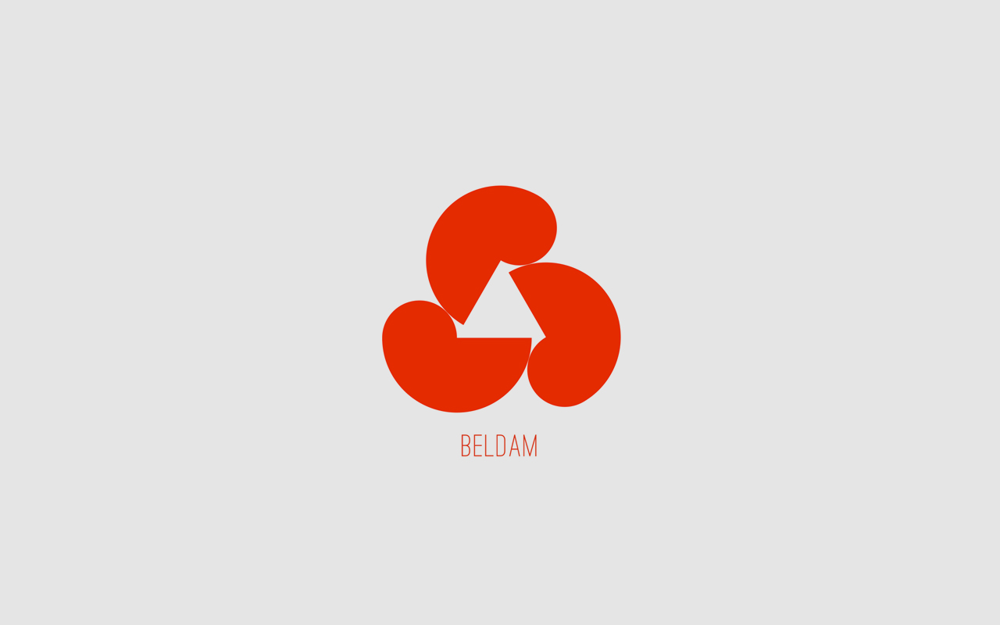
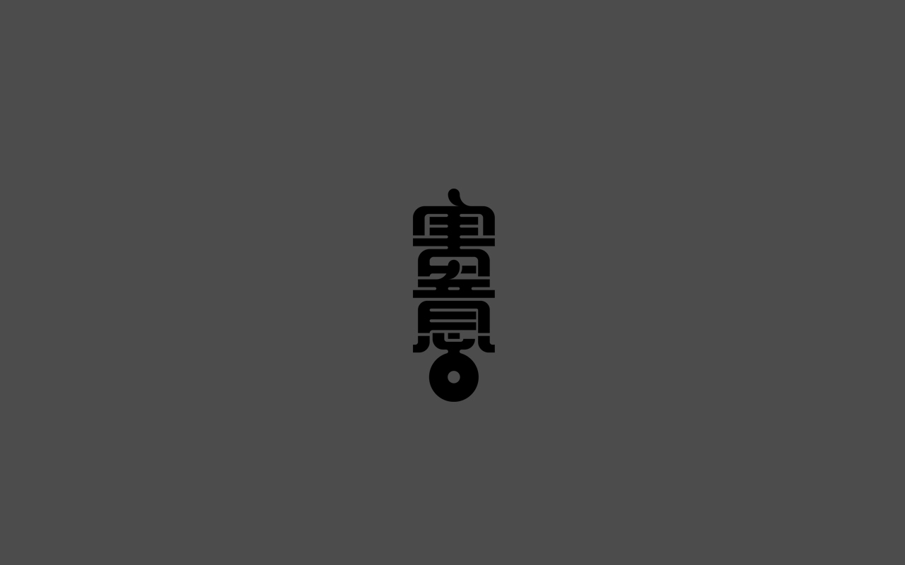

Aliceffekt invites the audience into an off-world excursion across miasmic landscapes, where brutal techno collides with forlorn melodies transmitted from a distant extinguished sun.

The Audio portal hosts soundtrack, records and live projects.
You can learn more about the instruments I use,
or dive deeper with the Audio FAQs.
Answers to commonly asked questions about audio.
What inspired you to play music?
I knew that I should want to write my own music when I was at a chiptune concert, I realized at that moment that I could write music with non-traditional and custom-made instruments.
When were you first introduced to chiptune music?
At the Gamma Festival in Montreal, Bubblyfish was the first performing chiptune act that I ever saw.
What kind of music do you play and why?
I tend to navigate the space between ambient and industrial music, I write starkly contrasted rhythmic music as I find it best to describe the environments explored in the songs.
What themes are you trying to uncover in your music?
Most of the music I write as aliceffekt is about a character's travels across the frigid scapes of this fictional world called the neauismetica, on this foreign planet called dinaisth.
Why did you decide to accompany your music with visuals?
The visuals came first, and I wrote the music to accompany the drawings. So the music merely accompany the visuals.
Do you have a set of tracks you play regularly?
I tend to write music for specific events that occur in the Neauismetica, and when I perform live, I pick moments which best fit with the other performers.
What is your approach when you perform live?
It depends, sometimes it's improvisational, like the telekinetic show. Or sometimes it's procedural, like the ehrivevnv_studies, where I merely make sure that everything is tuned properly. Sometimes I mix old songs and focus on building interesting visuals if the venue allows for it. As of late, I have been livecoding, where the song writing is done as a performance.
How do you approach songwriting?
I tend to write the song in my head entirely, and put it down in one setting. I often write music about the Neauismetica, it's a kind of mental place, a pool of endless musical idea I can visit and explore, it's where most of the songs come from.
When performing live, what's your setup like?
It varies, I've written a couple of shows to be performed with a specific synth, or a specific hardware like with the LeapMotion. Typically, I just use a combination of midi controllers and livecoding.
What instruments do you play?
None. I've never been too not much interested in music interpretation, my love is for composition and synthesis.


Alicef is a livecoding project built around Orca.
Alicef is a fragment of aliceffekt's diary, exploring similar spaces, but focusing on the aesthetics of pattern & repetition.
This livecoding project uses a combination of orca, noton and enfer, and is created to be mostly a performance project, there are currently no releases available for the Alicef project, only a handful of demos.

Aliceffekt is a electronic music project following the adventures of Neonev across Dinaisth.
A travel diary documenting the numerous voyages of Neonev through the fictional world of the Neauismetica, in which every album remembers a different time and a different place on Dinaisth.
*cough* That's right.
Edits & Remixes
Special versions of tracks heard in live sets.
- Solvent - Formulate(Aliceffekt Edit). 160bpm 2024
- :Wumpscut: - Wreath Of Barbs(Aliceffekt Edit). 160bpm 2024
- The Swarm - Dead Systems(Aliceffekt Edit). 160bpm 2024
- scarlxrd - EARACHE.(Aliceffekt Edit). 160bpm 2024
- IVOXYGEN - destruction(Aliceffekt Edit). 160bpm 2024
- SOPHIE - One More Time fear. Popstar(Aliceffekt Edit). 160bpm 2024
- DeathbyRomy - XXXhibitionist(Aliceffekt Edit). 160bpm 2024
- Sara Landry - Skate(Aliceffekt Edit). 160bpm 2024
- :PAPERCUTZ - ルーズエンド(Aliceffekt Edit). 140bpm 2024
- Comaduster - Winter Eyes(Aliceffekt Remix). Tympanik Audio. 2013
- Veroníque - Fisherman II(Aliceffekt Remix). 2013
- iVardensphere - Ghostnote(Aliceffekt Remix). Metropolis Records. 2012
- Misteur Valaire - Dan Dan(Aliceffekt Remix). 2011
- Doomer - Weltenzerstorer(Aliceffekt Remix). 2010
- Iszoloscope - Dumachus Junction Feat. Aliceffekt. Ant-zen. 2010
- Stray - Does it really matter(Aliceffekt Remix). 2009
- Perfection Plastic - Bad Girls(Aliceffekt Remix). 2009
Compilations
Singles part of compilation albums.
- Aliceffekt - Never Forgive Me Never Forget Me, Hollow. 2025
- Aliceffekt - Barbarois, Diablo Tribute Album. 2024
- Aliceffekt - The Shern's Question: The Land, Elmet Brae. 2023
- Aliceffekt - Glenda's Travels: ChipsynthMD, Toy Company. 2019
- Aliceffekt - Our Forgotten Push(feat. Mega Ran): Mega Ran Japan Tour. 2013
- Aliceffekt - Thievery of the Jade Books: Kinetik Festival Volume 4, Artoffact. 2011
- Aliceffekt - Laeis 7th Passage E.th: Kinetik Festival Volume 3, Artoffact. 2010
Logo design by Jan Vranovský.

Beldam Records is a netlabel releasing 4 tracks mini-albums.
beldam_records was initiated as an alternative channel for non-aliceffekt releases, focusing on IDM textures and lowfi techno.

Malice tells the earlier tales of Neonev as she crossed the Kanikule ocean.
The Malice logo(害意) was designed by Jan Vranovský.
03N10— Malice Release
incoming: audio faqs visual faqs